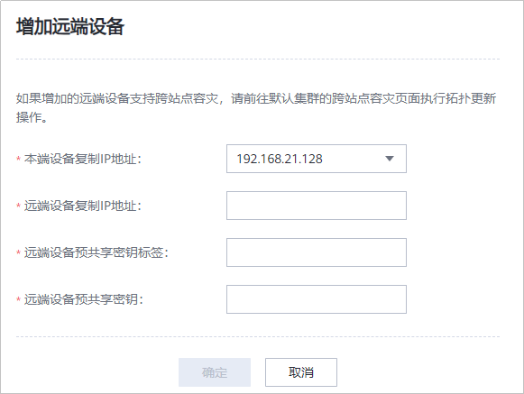

本端设备和远端设备之间需建立逻辑连接，用于设备之间的数据传输。
前提条件
本端设备与远端设备通信正常。
操作步骤
- 登录本端设备的DeviceManager管理界面。
- 选择。
- 单击复制集群所在行右侧的“更多”，选择“增加远端设备”。
系统进入“增加远端设备”页面。


您也可以单击复制集群的名称进入详情页面，并选择“远端设备”页签进行操作。
- 设置远端设备参数，相关参数信息如表1所示。
表1 远端设备参数说明 参数名称
参数说明
本端设备复制IP地址
选择一个本端设备的复制网络IP地址。
说明：仅需任选一个本端设备的复制网络IP地址，完成初始连接后，系统会自动连接所有本端设备与远端设备的复制链路。
远端设备复制IP地址
远端设备复制网络的IP地址。
说明：若远端存在多个设备，任选其一即可。
远端设备预共享密钥标签
用来标识远端设备的预共享密钥。
[取值范围]- 长度范围是5到32位。
- 预共享密钥标签由字母、数字、“_”组成，首字符只能是字母。
说明：此处应填写远端设备配置的预共享密钥标签。
远端设备预共享密钥
与远端设备的预共享密钥标签一一对应，进行身份认证时需要同时填写远端设备配置的预共享密钥标签和预共享密钥。
[取值范围]- 长度范围是8到31位。
- 密钥必须包含特殊字符（<>'&"和中文字符除外），还需要包含大写字母、小写字母以及数字中的任意两种。
- 单击“确定”。